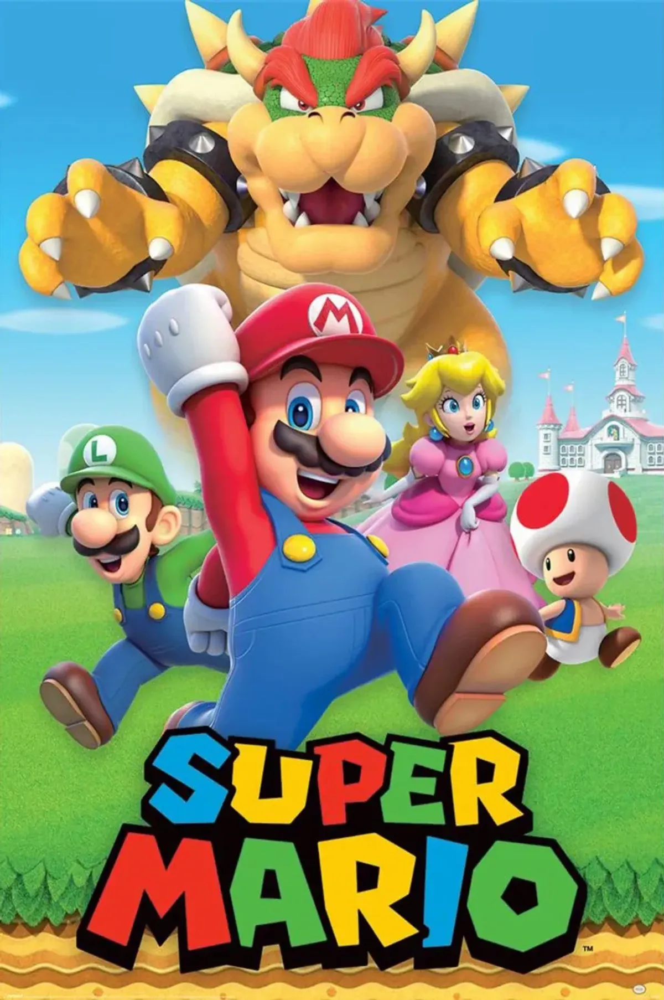

Super Mario
The Legend of Zelda

Inspiración en la infancia: Shigeru Miyamoto, el creador de la serie, se inspiró en sus propias experiencias de exploración durante su infancia en las zonas rurales de Japón. La sensación de aventura y descubrimiento fue fundamental en el diseño del juego.
Dualidad del desarrollo: "The Legend of Zelda" y "Super Mario Bros." fueron desarrollados simultáneamente por el mismo equipo en Nintendo. Mientras Mario se centraba en la acción rápida y los saltos, Zelda se enfocaba en la exploración y la resolución de acertijos.
Juego no lineal: A diferencia de muchos juegos de su época, "The Legend of Zelda" ofrecía una jugabilidad no lineal. Los jugadores podían explorar Hyrule en el orden que desearan, lo cual era bastante innovador para su tiempo.
Guardado del juego: "The Legend of Zelda" fue uno de los primeros juegos de consola que permitió a los jugadores guardar su progreso, utilizando una batería interna en el cartucho. Esto fue crucial para un juego tan grande y abierto.
El origen del nombre "Zelda": El nombre "Zelda" fue elegido por Miyamoto en honor a Zelda Fitzgerald, la esposa del famoso escritor F. Scott Fitzgerald. Miyamoto pensó que el nombre sonaba "agradable y significativo".
El origen del nombre "Link": El personaje principal, Link, fue nombrado así porque actúa como un "enlace" entre el jugador y el mundo del juego. Además, el nombre sugiere una conexión entre diferentes eras y mundos, un tema recurrente en la serie.
Diseño de mazmorras: Las mazmorras de "The Legend of Zelda" fueron diseñadas inicialmente en papel cuadriculado antes de ser programadas en el juego. Cada mazmorra tenía un diseño único con acertijos y enemigos específicos.
Primer jefe: Gohma: El primer jefe que los jugadores encuentran en "The Legend of Zelda" es Gohma, una araña gigante con un ojo grande. La batalla con Gohma establece el tono para las épicas batallas contra jefes que se convertirían en un sello distintivo de la serie.
Música icónica: La música de "The Legend of Zelda" fue compuesta por Koji Kondo, quien también compuso la música de "Super Mario Bros." La melodía principal del juego es una de las más reconocibles y queridas en la historia de los videojuegos.
Innovación en secuelas: La secuela "Zelda II: The Adventure of Link" introdujo varios cambios, incluyendo una perspectiva de desplazamiento lateral y elementos de juego de rol, demostrando la disposición de Nintendo a innovar y experimentar con la serie desde el principio.
Minecraft

Origen y Creación: Minecraft fue creado por Markus Persson, conocido como "Notch". Comenzó como un proyecto personal en 2009 y su versión inicial se lanzó públicamente en mayo de 2009 como una versión alpha.
Estilo Visual: El estilo gráfico de Minecraft, con sus gráficos pixelados y estilo retro, fue en parte una decisión pragmática debido a las limitaciones de tiempo y recursos de desarrollo. Sin embargo, este estilo se convirtió en un sello distintivo del juego.
Modo Creativo: El popular modo "Creative" de Minecraft, donde los jugadores pueden construir libremente sin preocuparse por recursos o enemigos, se agregó en respuesta a la comunidad que quería enfocarse más en la construcción y menos en la supervivencia.
Crecimiento y Popularidad: Minecraft comenzó a ganar popularidad rápidamente después de su lanzamiento. A medida que más personas compartían sus creaciones en línea y se desarrollaba la comunidad, el juego se convirtió en un fenómeno global.
Versiones y Actualizaciones: Minecraft ha experimentado numerosas actualizaciones a lo largo de los años, agregando nuevas características como biomas, mobs (criaturas), y mecánicas de juego. Estas actualizaciones continuas han mantenido fresco el juego y han fomentado la lealtad de los jugadores a largo plazo.
Venta a Microsoft: En 2014, Mojang, la compañía detrás de Minecraft, fue adquirida por Microsoft por $2.5 mil millones de dólares. A pesar de la compra, el juego se ha mantenido disponible en múltiples plataformas y ha continuado recibiendo soporte activo.
Impacto Cultural: Minecraft ha tenido un impacto significativo en la cultura pop y en la industria de los videojuegos. Ha inspirado a numerosos juegos similares de construcción y exploración, y se utiliza ampliamente en educación por su capacidad para fomentar la creatividad y la colaboración.
Eventos en el Juego: A lo largo de los años, Minecraft ha albergado eventos especiales dentro del juego, como convenciones virtuales (como "MineCon") y colaboraciones con otras franquicias famosas, como Star Wars y Pokémon.
Comunidad Activa: La comunidad de Minecraft es conocida por su creatividad y pasión. Los jugadores han creado mods, mapas personalizados, obras de arte y más, contribuyendo enormemente al universo expansivo de Minecraft.
Legado Duradero: Más de una década después de su lanzamiento inicial, Minecraft sigue siendo uno de los juegos más jugados y vendidos de todos los tiempos, demostrando la longevidad y el impacto duradero que puede tener un juego bien diseñado y apreciado por su comunidad. Largo tiempo de desarrollo
Fortnite
 El desarrollo de Fortnite comenzó en 2011 por Epic Games, pero no fue lanzado oficialmente hasta 2017. El proceso de desarrollo fue largo y cambiante, ya que el juego pasó por varias iteraciones y conceptos antes de convertirse en lo que es hoy.
El desarrollo de Fortnite comenzó en 2011 por Epic Games, pero no fue lanzado oficialmente hasta 2017. El proceso de desarrollo fue largo y cambiante, ya que el juego pasó por varias iteraciones y conceptos antes de convertirse en lo que es hoy.
Inspiración del modo Battle Royale: El modo Battle Royale de Fortnite fue inspirado por el éxito de otros juegos de supervivencia y de eliminación como "PlayerUnknown's Battlegrounds" (PUBG). Epic Games decidió añadir un modo Battle Royale a Fortnite después de ver la popularidad de este tipo de juegos.
Cambio de enfoque: Originalmente, Fortnite se concibió como un juego de defensa de bases cooperativo llamado "Fortnite: Save the World". Sin embargo, el modo Battle Royale rápidamente superó en popularidad al modo Save the World, convirtiéndose en el enfoque principal del juego.
Desarrollo del estilo visual: El estilo visual de Fortnite, con gráficos coloridos y estilizados, fue una elección deliberada para diferenciarse de otros shooters que generalmente tienen un estilo más oscuro y realista. Esto también ayudó a atraer a una audiencia más amplia, incluyendo a jugadores más jóvenes.
Eventos en vivo e innovaciones: Fortnite se ha hecho famoso por sus eventos en vivo y colaboraciones con artistas y marcas. Uno de los eventos más destacados fue el concierto virtual de Travis Scott en 2020, que atrajo a más de 12 millones de jugadores en el juego.
Sistema de construcción: Una de las características más distintivas de Fortnite es su sistema de construcción. Los jugadores pueden recolectar materiales y construir estructuras en tiempo real durante las partidas, lo que añade una capa estratégica única al juego.
Modelo de negocio: Fortnite es gratuito para jugar y se monetiza a través de la venta de V-Bucks, una moneda virtual que los jugadores pueden usar para comprar cosméticos, como skins, emotes y pases de batalla. Este modelo ha sido extremadamente exitoso y ha generado miles de millones de dólares en ingresos.
Impacto cultural: Fortnite ha tenido un gran impacto en la cultura popular, influenciando la moda, el entretenimiento y el lenguaje. Los emotes del juego, como el baile "Floss", se han vuelto fenómenos virales y han sido replicados por celebridades y atletas.
Actualizaciones constantes: Epic Games mantiene Fortnite actualizado con contenido nuevo y fresco regularmente. Esto incluye nuevas temporadas, eventos, modos de juego y colaboraciones con franquicias populares como "Star Wars", "Marvel" y "DC Comics".
Crossover y colaboraciones: Fortnite es conocido por sus múltiples colaboraciones y crossovers con otras franquicias y personajes, incluyendo a Batman, John Wick, y personajes de "Avengers", entre muchos otros. Estos eventos especiales no solo mantienen el interés de los jugadores, sino que también atraen a nuevas audiencias.Inspiración en la infancia de Miyamoto: